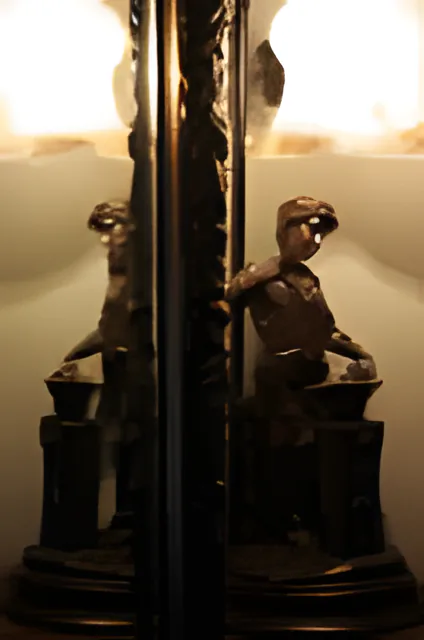

Tim & Marie McGrath
Your hosts. They opened Belvedere Lodge, and every guest is offered a drink on arrival with something warm and delicious from the oven.
Tim and Marie McGrath's guesthouse, in its own gardens at Tivoli, Cork City.
Belvedere Lodge has gained a wonderful reputation for its warm welcome since Tim and Marie McGrath first opened their doors. It sits on its own tranquil gardens at Tivoli, with cascades, ponds and a gazebo.
Cork City has been acclaimed by the Lonely Planet Guide as one of the top 10 places to visit in the world. But be assured, you won't be lonely here. You'll find the people warm, friendly and always happy to help.
Your hosts. They opened Belvedere Lodge, and every guest is offered a drink on arrival with something warm and delicious from the oven.
Heads up the kitchen team: the full Irish cooked to order, home-baked breads and home-made jams.
Great local producers supply the fresh food at breakfast, among them Clonakilty Puddings and Barry's Tea.




Cork has so much to offer you, and we love showing it off. Guests who stay more than a day or two often say it's a city that grows on you. We've put together suggested plans for 3, 5 and 7 days. Ask us for the full version, with every attraction, when you book, or over breakfast.
“In Cork you can neither die of thirst nor hunger.”
Cork is lovely at night, and because it's compact, pretty much everything can be reached on foot. We're always happy to help plan your evenings, with suggestions and reservations. We have no connections with any bars or restaurants.
We also have guides for Italian and Polish visitors. Just ask.
We're in an ideal position for touring, right between the Wild Atlantic Way and Ireland's Ancient East touring drives. Belvedere Lodge is close to the Silver Springs Moran Hotel and handy for Little Island and Fota. Car hire is available at Cork Airport or in the city centre.
Watch the videos on our YouTube channel: Cork City, Kinsale and West Cork.